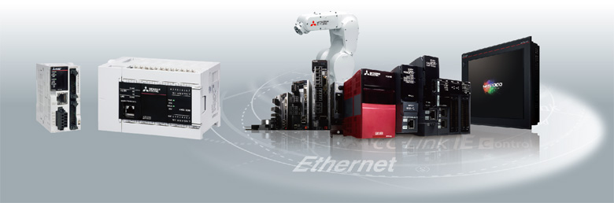

MELSEC iQ-F series iQ Platform

Taking the iQ Platform
to the next level.
iQ platform minimizes TCO * by providing
innovative solutions for :
Building a stable production system with enhanced productivity
Reducing the time from system development to startup for shorter product cycles
Efficiently managing and servicing the system to reduce down time and maintain productivity
Ensuring product quality by swiftly processing large volumes of control data and production data and
establishing traceability
*TCO : Total Cost of Ownership
iQ Platform
PLC & HMI
- 1.High-speed bus performance greatly enhances the total system performance with the high-speed system bus performance (150 × conventional speed *1)
- 2.Standardize programs with pre-defined module function blocks and module labels
- 3.Uniform and powerful security functions
*1Comparison with FX3U
Network
- 1.Achieve loss-less retrieval with CC-Link IE Field 1 Gbps high-speed communication (link refresh performance 40 × conventional levels *1)
- 2.Seamless connectivity with each device using SLMP *2
*1Comparison with FX3U
*2SLMP : SeamLess Message Protocol
Engineering Environment
- 1.The intuitive programming environment of GX Works3 reduces development cost.
- 2.Module configuration drawings can be generated through direct reading from actual hardware.
- 3.Share parameters across multiple engineering software via MELSOFT Navigator.
